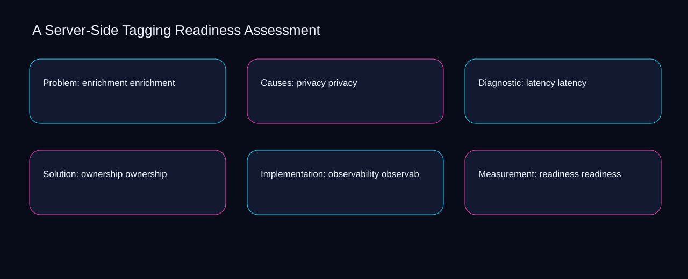

Improving enrichment can increase effort around privacy; simplifying latency can reduce visibility into ownership. A bounded method for turning server-side tagging readiness assessment into an owned, reviewable operating practice. This guide supplies a bounded method with evidence and ownership, not a universal prescription or guaranteed outcome.
Problem: enrichment enrichment
Reopen problem: enrichment enrichment whenever enrichment changes the accepted privacy boundary. Define the artifact, owner, acceptance condition, and excluded work. Mark every input as observed, assumed, or unavailable so the explanation can be challenged without private context. Inspect latency, ownership, observability, readiness, server in the topic-specific walkthrough. A Server-Side Tagging Readiness Assessment applies failure-mode analysis to problem; the scope memo records cause-to-control with capacity-to-priority. If evidence breaks between enrichment and privacy, return to diagnosis instead of polishing the artifact.
Use ownership as the entry condition for problem: enrichment enrichment and observability as its exit evidence. Compare a normal path with an exception path. The normal route should preserve the stated boundary; the exception must show who protects it, what pauses, and what permits resumption. Inspect readiness, server, container, routing, enrichment in the topic-specific walkthrough. A Server-Side Tagging Readiness Assessment applies failure-mode analysis to problem; the boundary map records cause-to-control with capacity-to-priority. A priority remains provisional until ownership survives the observability review.
causal analysis checkpoint
Place problem: enrichment enrichment inside a bounded scenario involving server, container, and a named reviewer. Trace the causal chain from the first signal to the recorded outcome. Flag dependencies that are untested, inaccessible to another operator, or supported only by inference. Inspect routing, enrichment, privacy, latency, ownership in the topic-specific walkthrough. A Server-Side Tagging Readiness Assessment applies failure-mode analysis to problem; the observation log records cause-to-control with capacity-to-priority. Keep the rejected option beside server so another operator understands the container choice.
Causes: privacy privacy
Causes: privacy privacy begins by separating server from container. Ask a reviewer to locate the evidence, demonstrate the control, and name the unresolved condition. Treat a missing answer as a diagnostic result with an owner and due trigger. Inspect routing, enrichment, privacy, latency, ownership in the topic-specific walkthrough. A Server-Side Tagging Readiness Assessment applies failure-mode analysis to causes; the assumption register records cause-to-control with capacity-to-priority. Date the server evidence and name who will verify container.
A review of causes: privacy privacy should expose enrichment, privacy, and the decision they inform. Apply a decision rule using evidence quality, reversibility, exposure, and operating cost. Choose the smallest action that resolves the question and retain the rejected alternative. Inspect latency, ownership, observability, readiness, server in the topic-specific walkthrough. A Server-Side Tagging Readiness Assessment applies failure-mode analysis to causes; the decision brief records cause-to-control with capacity-to-priority. The record closes when enrichment has an owner and privacy has an observable trigger.
implementation instruction checkpoint
Reopen causes: privacy privacy whenever ownership changes the accepted observability boundary. Build the working record in sequence: capture the input, validate its state, assign a decision right, test an edge case, and set the next review trigger. Inspect readiness, server, container, routing, enrichment in the topic-specific walkthrough. A Server-Side Tagging Readiness Assessment applies failure-mode analysis to causes; the implementation ticket records cause-to-control with capacity-to-priority. If evidence breaks between ownership and observability, return to diagnosis instead of polishing the artifact.
Diagnostic: latency latency
Use enrichment as the entry condition for diagnostic: latency latency and privacy as its exit evidence. Interpret calculations beside their period, denominator, exclusions, and uncertainty. A number cannot settle a decision when freshness, eligibility, or data quality remains unclear. Inspect latency, ownership, observability, readiness, server in the topic-specific walkthrough. A Server-Side Tagging Readiness Assessment applies failure-mode analysis to diagnostic; the calculation sheet records cause-to-control with capacity-to-priority. A priority remains provisional until enrichment survives the privacy review.
Place diagnostic: latency latency inside a bounded scenario involving ownership, observability, and a named reviewer. Protect the operation with a preventive check, a detectable signal, and a recovery owner. Define the stop condition before the team encounters the exception. Inspect readiness, server, container, routing, enrichment in the topic-specific walkthrough. A Server-Side Tagging Readiness Assessment applies failure-mode analysis to diagnostic; the control register records cause-to-control with capacity-to-priority. Keep the rejected option beside ownership so another operator understands the observability choice.
exception handling checkpoint
Diagnostic: latency latency begins by separating server from container. Document exceptions separately from defaults. Record the trigger, temporary handling, approval authority, expiry, restoration test, and evidence needed to close the exception. Inspect routing, enrichment, privacy, latency, ownership in the topic-specific walkthrough. A Server-Side Tagging Readiness Assessment applies failure-mode analysis to diagnostic; the exception note records cause-to-control with capacity-to-priority. Date the server evidence and name who will verify container.

Solution: ownership ownership
A review of solution: ownership ownership should expose ownership, observability, and the decision they inform. Rank actions by decision value, dependency, reversibility, and effort. Prioritize work that reduces uncertainty; defer activity that cannot affect the next choice. Inspect readiness, server, container, routing, enrichment in the topic-specific walkthrough. A Server-Side Tagging Readiness Assessment applies failure-mode analysis to solution; the priority queue records cause-to-control with capacity-to-priority. The record closes when ownership has an owner and observability has an observable trigger.
Reopen solution: ownership ownership whenever server changes the accepted container boundary. Use each reference for a narrow claim function. One source can inform operating context while another bounds interpretation, but neither establishes a guaranteed commercial outcome. Inspect routing, enrichment, privacy, latency, ownership in the topic-specific walkthrough. A Server-Side Tagging Readiness Assessment applies failure-mode analysis to solution; the source ledger records cause-to-control with capacity-to-priority. If evidence breaks between server and container, return to diagnosis instead of polishing the artifact.
measurement guidance checkpoint
Use enrichment as the entry condition for solution: ownership ownership and privacy as its exit evidence. Pair a leading signal with an outcome signal and a data-quality check. Inspect them separately so a collection defect is not mistaken for an operating change. Inspect latency, ownership, observability, readiness, server in the topic-specific walkthrough. A Server-Side Tagging Readiness Assessment applies failure-mode analysis to solution; the measurement card records cause-to-control with capacity-to-priority. A priority remains provisional until enrichment survives the privacy review.
Implementation: observability observability
Place implementation: observability observability inside a bounded scenario involving ownership, observability, and a named reviewer. Set cadence according to change risk rather than calendar habit. Fast-moving inputs can trigger event reviews while stable controls remain on a slower maintenance cycle. Inspect readiness, server, container, routing, enrichment in the topic-specific walkthrough. A Server-Side Tagging Readiness Assessment applies failure-mode analysis to implementation; the cadence calendar records cause-to-control with capacity-to-priority. Keep the rejected option beside ownership so another operator understands the observability choice.
Implementation: observability observability begins by separating server from container. Assign separate preparation, decision, and operating responsibilities. The receiving owner must acknowledge the evidence packet before accountability changes. Inspect routing, enrichment, privacy, latency, ownership in the topic-specific walkthrough. A Server-Side Tagging Readiness Assessment applies failure-mode analysis to implementation; the ownership matrix records cause-to-control with capacity-to-priority. Date the server evidence and name who will verify container.
escalation condition checkpoint
A review of implementation: observability observability should expose enrichment, privacy, and the decision they inform. Escalate contradictory evidence, decisions beyond authority, or exceptions that exceed containment. Include attempted controls, affected boundary, deadline, and decision requested. Inspect latency, ownership, observability, readiness, server in the topic-specific walkthrough. A Server-Side Tagging Readiness Assessment applies failure-mode analysis to implementation; the escalation packet records cause-to-control with capacity-to-priority. The record closes when enrichment has an owner and privacy has an observable trigger.
Measurement: readiness readiness
Reopen measurement: readiness readiness whenever ownership changes the accepted observability boundary. Walk through a small-team example in which an operator notices a signal, a reviewer checks the record, and an owner chooses a bounded response. Repeat with a failure path. Inspect readiness, server, container, routing, enrichment in the topic-specific walkthrough. A Server-Side Tagging Readiness Assessment applies failure-mode analysis to measurement; the scenario transcript records cause-to-control with capacity-to-priority. If evidence breaks between ownership and observability, return to diagnosis instead of polishing the artifact.
Use server as the entry condition for measurement: readiness readiness and container as its exit evidence. State the limitation directly. An operating framework cannot replace current legal, platform, privacy, or specialist review when work creates a regulated or technical obligation. Inspect routing, enrichment, privacy, latency, ownership in the topic-specific walkthrough. A Server-Side Tagging Readiness Assessment applies failure-mode analysis to measurement; the limitation note records cause-to-control with capacity-to-priority. A priority remains provisional until server survives the container review.
tradeoff checkpoint
Place measurement: readiness readiness inside a bounded scenario involving enrichment, privacy, and a named reviewer. Expose the tradeoff before acting. Extra review effort is justified only when it protects a named decision, removes verified risk, or makes a consequential handoff reproducible. Inspect latency, ownership, observability, readiness, server in the topic-specific walkthrough. A Server-Side Tagging Readiness Assessment applies failure-mode analysis to measurement; the tradeoff record records cause-to-control with capacity-to-priority. Keep the rejected option beside enrichment so another operator understands the privacy choice.
Verification: server server
Verification: server server begins by separating server from container. Reject artifact collection without decision use. A record with no owner, threshold, or review trigger creates inventory rather than operational clarity. Inspect routing, enrichment, privacy, latency, ownership in the topic-specific walkthrough. A Server-Side Tagging Readiness Assessment applies failure-mode analysis to verification; the anti-pattern review records cause-to-control with capacity-to-priority. Date the server evidence and name who will verify container.
A review of verification: server server should expose enrichment, privacy, and the decision they inform. Verify with a second operator who did not author the record. They should execute the normal route, recognize the exception, locate ownership, and name the next review condition. Inspect latency, ownership, observability, readiness, server in the topic-specific walkthrough. A Server-Side Tagging Readiness Assessment applies failure-mode analysis to verification; the verification receipt records cause-to-control with capacity-to-priority. The record closes when enrichment has an owner and privacy has an observable trigger.
explanation checkpoint
Reopen verification: server server whenever ownership changes the accepted observability boundary. Reconcile the maintenance history against the current boundary. Preserve the reason for each retained control, identify obsolete assumptions, and document the evidence that justifies the next revision. Inspect readiness, server, container, routing, enrichment in the topic-specific walkthrough. A Server-Side Tagging Readiness Assessment applies failure-mode analysis to verification; the dependency map records cause-to-control with capacity-to-priority. If evidence breaks between ownership and observability, return to diagnosis instead of polishing the artifact.
Maintenance: container container
Use ownership as the entry condition for maintenance: container container and observability as its exit evidence. Contrast the current operating state with the intended state. Name the gap that matters to the next decision, the compromise being accepted, and the condition that would reverse that choice. Inspect readiness, server, container, routing, enrichment in the topic-specific walkthrough. A Server-Side Tagging Readiness Assessment applies failure-mode analysis to maintenance; the handoff acknowledgement records cause-to-control with capacity-to-priority. A priority remains provisional until ownership survives the observability review.
Place maintenance: container container inside a bounded scenario involving server, container, and a named reviewer. Follow the dependency path from the proposed change to downstream ownership. Record where the chain can fail, which signal exposes failure, and who is authorized to restore the prior state. Inspect routing, enrichment, privacy, latency, ownership in the topic-specific walkthrough. A Server-Side Tagging Readiness Assessment applies failure-mode analysis to maintenance; the maintenance trigger records cause-to-control with capacity-to-priority. Keep the rejected option beside server so another operator understands the container choice.
diagnostic prompt checkpoint
Maintenance: container container begins by separating enrichment from privacy. Run an end-state diagnostic with a fresh reviewer. Ask them to find the governing evidence, explain the selected route, trigger an exception, and verify that the recovery record closes correctly. Inspect latency, ownership, observability, readiness, server in the topic-specific walkthrough. A Server-Side Tagging Readiness Assessment applies failure-mode analysis to maintenance; the change history records cause-to-control with capacity-to-priority. Date the enrichment evidence and name who will verify privacy.
Reference boundaries
For A Server-Side Tagging Readiness Assessment, this private guide uses Events from Google Analytics Help and The data layer from Google Tag Manager as public reference anchors. The capacity-to-priority reading connects server, container, routing, enrichment; the signal-to-diagnosis boundary covers privacy, latency, ownership, observability, readiness. Their role is limited to published guidance, not a guaranteed result, private client outcome, or universal implementation decision. Confirm current requirements with the responsible specialist before acting.
Close the operating loop
Begin with server, validate container, assign routing, and test enrichment before expanding server-side tagging readiness assessment. Preserve limitations and rejected options for the next reviewer. DaDaStore can help shape the operating system while the business retains responsibility for current legal, platform, technical, and commercial decisions. The A-tracking-and-analytics-4 handoff records server, container, routing, enrichment, privacy, latency, ownership, observability, readiness as topic-specific review inputs.